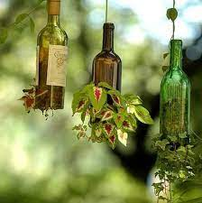
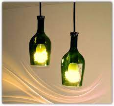
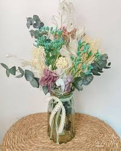

Ideas para reutilizar botellas de vidrio

Macetero colgante: Puedes cortar el fondo de una botella de vidrio, agregar un poco de tierra y plantar tus plantas favoritas.

Lámpara de botellas: Une varias botellas de vidrio y coloca luces en su interior para crear una hermosa lámpara reciclada.

Jarrones decorativos: Pinta y decora botellas de vidrio para convertirlas en hermosos jarrones para flores o centros de mesa.